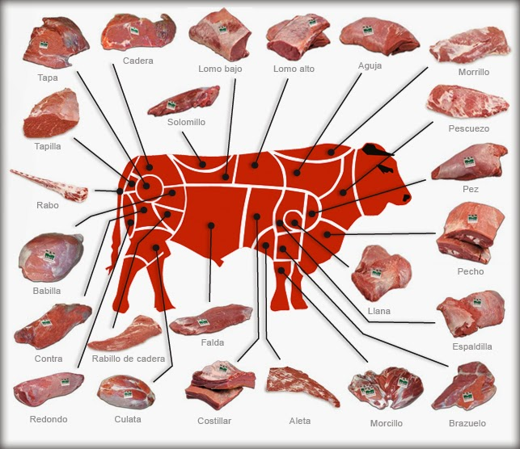

En Carnicería "Mi Mary" nos especializamos en ofrecer
los mejores cortes de res y cerdo, siempre fresco y con la
mejor y mayor calidad. Contamos con atención personalizada,
cortes al gusto y precios que se ajustan a tu bolsillo.
Ven y descubre por que somos la preferencia de las familias
de la zona.
"¡¡¡Calidad, sabor y confianza en cada visita!!!"
